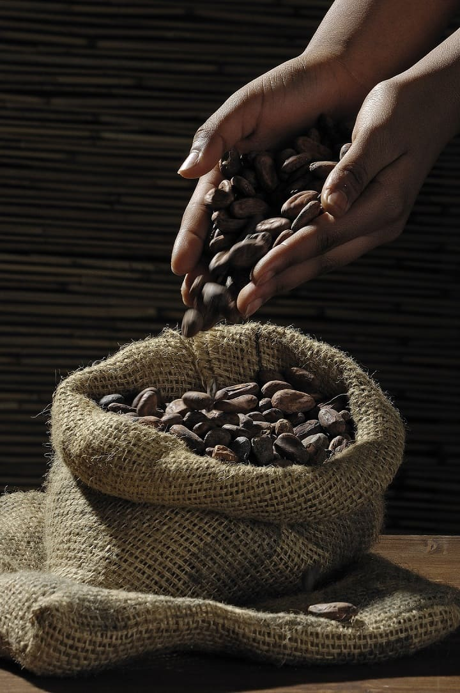
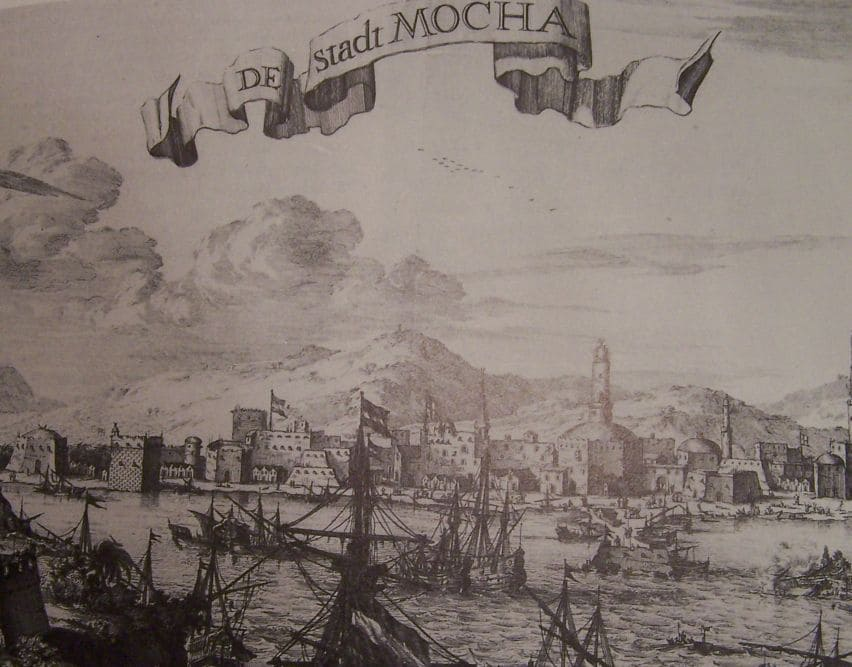
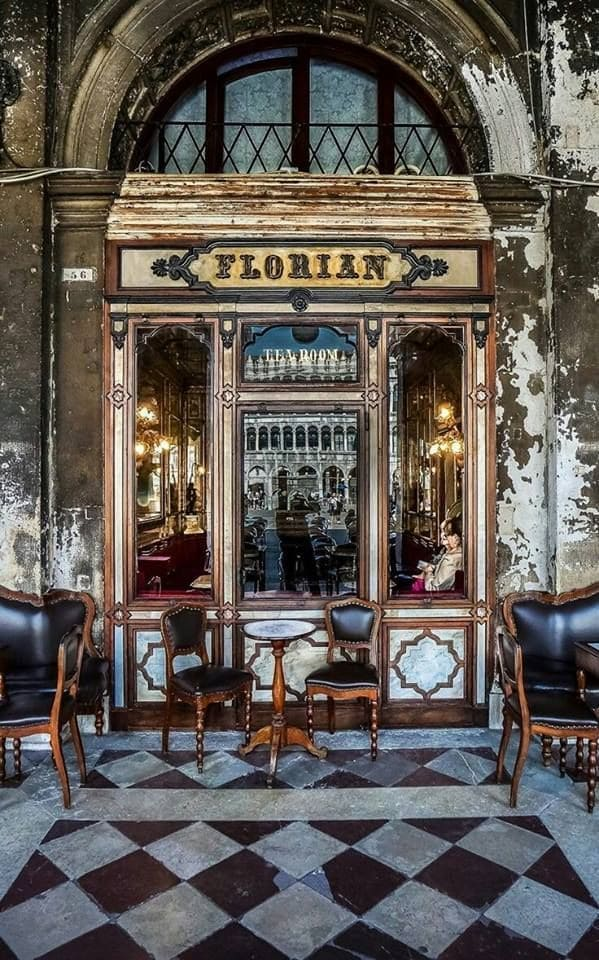
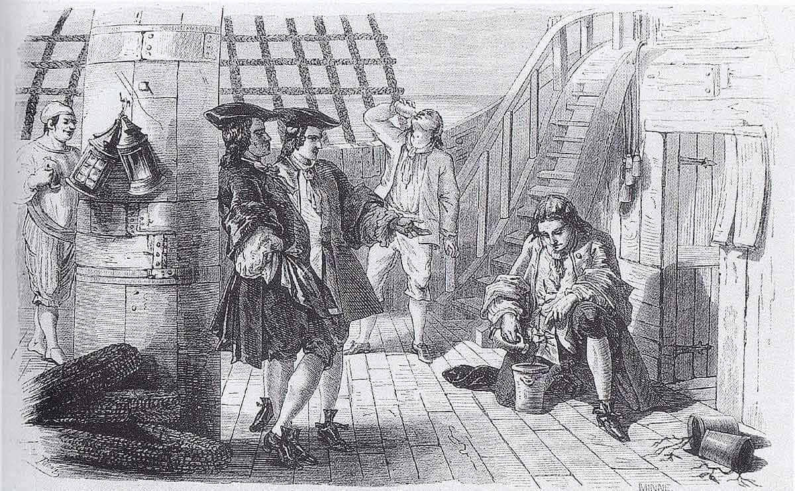
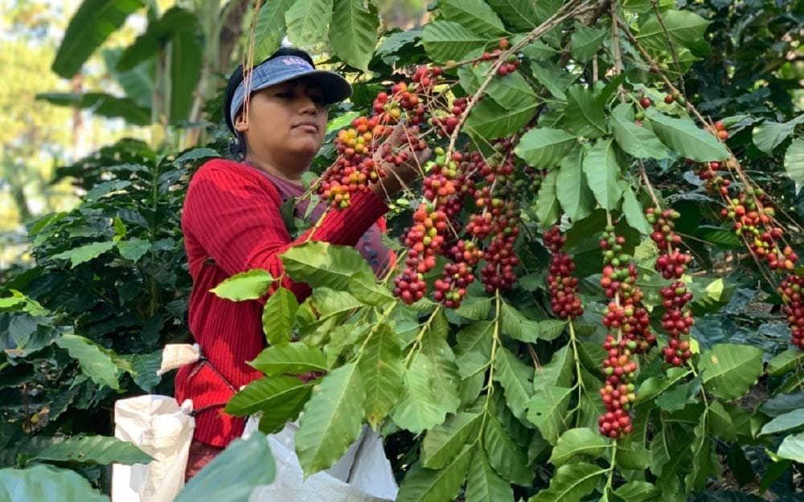
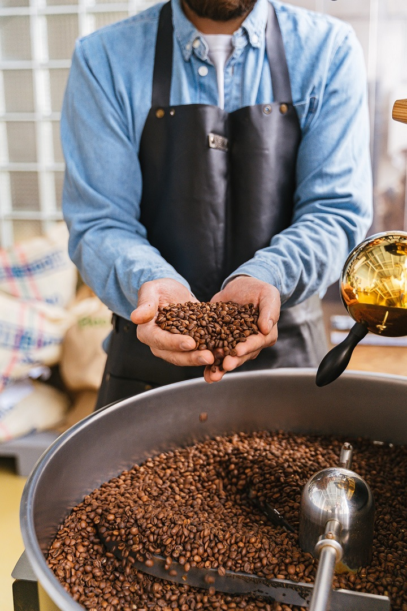
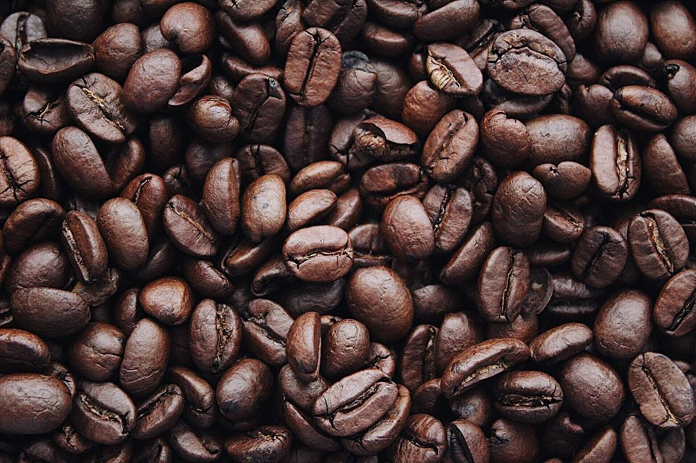
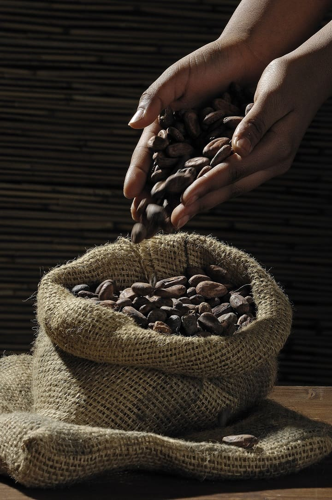
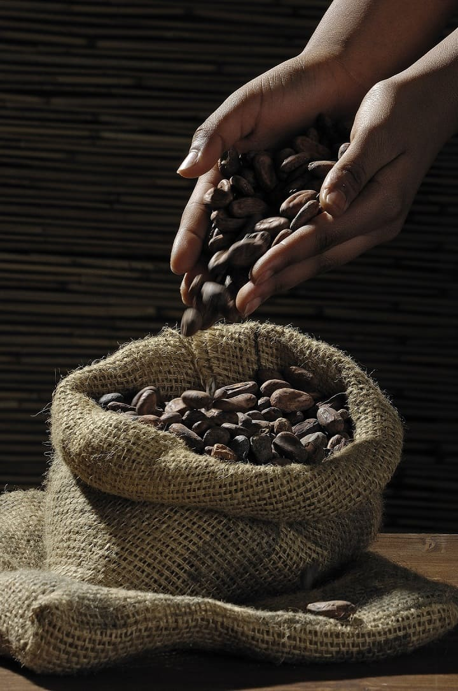

La historia del café se remonta al siglo XIII, aunque el origen del café sigue sin esclarecerse. Se cree que los ancestros etíopes del actual pueblo oromo
fueron los primeros en descubrir y reconocer el efecto energizante de los granos de la planta del café; sin embargo, no se ha hallado evidencia directa que indique en qué parte de África
crecía o qué nativos lo habrían usado como un estimulante o incluso conocieran su existencia antes del siglo XVII.
El café llegó primero a la colonia holandesa de Surinam en 1718, y después se plantaron cafetales en la Guyana francesa y
el primero de muchos en Brasil, en Pará. En 1730 los británicos llevaron el café a Jamaica, donde hoy en día se cultiva el café más famoso y caro del mundo, en las Blue Mountains.
Supuesto origen
Existen varios relatos legendarios sobre el origen de la bebida en sí. Uno de ellos involucra al místico sufí yemení Ghothul Akbar Nooruddin Abu al-Hasan al-Shadhili. Según esta leyenda, mientras viajaba por Etiopía, observó unas aves
de vitalidad inusual y, al probar las bayas que las aves estaban comiendo, experimentó la misma vitalidad. Otro relato involucra al pastor de cabras, Kaldi, quien se percató de los efectos energizantes cuando su rebaño mordisqueó las bayas rojas y brillantes
de cierto arbusto, mascando la fruta en sí. Su júbilo lo indujo a llevar las bayas a un venerado musulmán en un monasterio cercano; pero dicha persona desaprobó su uso y lo echó al fuego, de donde emergió un aroma atrayente. Los granos tostados fueron
rápidamente extraídos de las brasas y disueltos en agua caliente con sal, produciendo la primera taza de café en el mundo.
Los ancestros etíopes de la actual tribu oroma fueron los primeros en haber reconocido el efecto energizante de la planta de café nativa la cual preparaban con sal debido al poco comercio que existía con el azúcar. Se han llevado a cabo estudios de
variabilidad genética sobre diversos tipos de Coffea arabica y se ha encontrado una baja diversidad, pero que retiene alguna heterozigocidad residual de materiales ancestrales y relacionados directamente de las especies extendidas de
Coffea canephora y C. liberica; sin embargo, hasta ahora no se ha hallado evidencia que indique en qué parte de África creció el café o entre qué nativos habría sido usado como un estimulante o conocido con anterioridad al siglo XVII.

La palabra "café" proviene del término turco kahve, a su vez, procedente del árabe, qahwa, a través del italiano. El término árabe sería una abreviación de la expresión qahhwat al-bun o planta de café.
Un posible origen de la palabra se encontraría en el Reino de Kaffa en Etiopía, de donde procedería la planta del café; su nombre allí es bunn o bunna.
Evolución y comercio
La ciudad portuaria de Moca, en Yemen, en la costa del Mar Rojo, era el puerto principal de la única ruta marítima a la Meca, el lugar más concurrido del mundo en aquella época. Los árabes, sin embargo, tenían una rigurosa política de no exportar
granos fértiles de café, para que no se pudiese cultivar en ningún otro lugar. El grano de café es la semilla del cafeto, pero cuando se le quitan las capas exteriores se vuelve infértil. Muchos fueron los intentos que se hicieron para lograr
llevarse algunos cafetos o granos fértiles, pero esa carrera la ganaron por fin los holandeses en 1616, que consiguieron llevarse algunos a Holanda y allí los cultivaron en invernaderos.

Ilustración del puerto de Moca
Al principio, las autoridades del Yemen alentaron mucho el consumo de café, ya que sus efectos se consideraban preferibles a los más fuertes del Kat, un arbusto cuyas hojas y brotes se masticaban como estimulante. Los primeros establecimientos
de servir café se abrieron en la Meca y se llamaban kaveh kanes. Ese tipo de establecimiento se extendió rápidamente por todo el mundo árabe y los cafés se convirtieron en lugares muy concurridos en los que se jugaba al ajedrez, se intercambiaban
chismes y se disfrutaba del canto, el baile y la música. Los establecimientos estaban decorados con lujo y cada uno de ellos tenía su propio carácter. Nada había habido antes como el establecimiento de café: un lugar en el que se podía hacer vida
de sociedad y tratar de negocios en un ambiente cómodo y al que todo el mundo podía ir por el precio de un café.
Los establecimientos de café árabes pronto se convirtieron en centros de actividad política y fueron suprimidos. Después, en las siguientes décadas, el café y los establecimientos de café fueron prohibidos varias veces, pero siguieron reapareciendo.
Con el tiempo se encontró una solución: el café y los establecimientos de café tuvieron que pagar impuestos.
El café desembarca en Asia y Europa
Los holandeses empezaron también a cultivar café en Malabar, en la India, y en 1699 llevaron alguno a Batavia, en Java, en lo que es ahora Indonesia. Unos cuantos años después, las colonias holandesas se habían convertido en la principal fuente de suministro
de café a Europa. Hoy en día Indonesia es el cuarto exportador de café del mundo.

Cafetería Florian en la actulidad
Los comerciantes venecianos fueron los que primero llevaron el café a Europa en 1615. Esa fue la época en que también aparecieron en Europa las otras dos grandes bebidas calientes: la primera, el chocolate caliente, que llevaron los españoles de las Américas
a España en 1528; la otra el té, que se vendió por primera vez en Europa en 1610.
Al principio el café lo vendían sobre todo los vendedores de limonada y se creía que tenía cualidades medicinales. El primer establecimiento de café en Europa se abrió en Venecia en 1683, y fue el famosísimo Caffè Florian de la Plaza de San Marcos, que abrió
sus puertas en 1720 y sigue aún hoy abierto al público.
El mayor mercado de seguros del mundo, Lloyd's de Londres, empezó a funcionar como un establecimiento de café. Empezó el negocio en 1688 Edward Lloyd, que preparaba allí las listas de los buques que sus clientes habían asegurado.
El café desembarca en Las Américas
La primera referencia a que se tomaba café en Norteamérica data de 1668 y, pronto después de esa fecha, se abrieron establecimientos de café en Nueva York, Filadelfia, Boston y algunas otras ciudades. El Boston Tea Party de 1773 se planeó en un establecimiento
de café, el Green Dragon. Tanto la Bolsa de Nueva York como el Banco de Nueva York empezaron en establecimientos de café, en lo que es hoy el distrito financiero de Wall Street.
Fue en el decenio de 1720 cuando el café se empezó a cultivar por primera vez en las Américas, gracias a lo que es quizá el relato más fascinante y romántico de la historia del café. Gabriel Mathieu de Clieu era un oficial de la Marina francesa que estaba de
servicio en la Martinica y que, en 1720, viajó a París con permiso. Con alguna ayuda y no poco encanto personal adquirió un cafeto que se llevó con él en el viaje por mar de vuelta. El cafeto fue instalado en una caja de cristal y dejado en cubierta para
mantenerlo caliente y que no lo dañase el agua salada. El viaje estuvo lleno de incidentes, o al menos así fue como lo contó Mathieu de Clieu en su diario: piratas tunecinos persiguieron el buque, hubo una fuerte tormenta y el cafeto tuvo que ser amarrado.
Nuestro héroe se vio obligado a enfrentarse con un enemigo a bordo que tenía envidia y trató de sabotear el arbusto, hubo una pelea violenta en la que una de sus ramas se quebró, pero el cafeto sobrevivió a todo ello.
Después de esos incidentes el buque quedó inmóvil por falta de viento y se racionó el agua potable. Para De Clieu estaba claro qué era lo más importante de todo y cedió la mayor parte del agua que le correspondía al cafeto. El cafeto sobrevivió y él también.
Por último, el buque llegó a la Martinica y el cafeto fue replantado en Preebear, donde lo cercaron con un seto de espinas y lo cuidaron esclavos. El cafeto creció, se multiplicó, y en 1726 se hizo la primera cosecha. Está registrado que en 1777 había entre
18 y 19 millones de cafetos en la Martinica. Había quedado establecido el modelo para un nuevo cultivo comercial que podía darse en el Nuevo Mundo.

Ilustración de la odisea cafetera
Fueron los holandeses, sin embargo, los que primero empezaron a propagar el cafeto en América Central y del Sur, donde hoy en día reina sin rival como el principal cultivo con fines comerciales del continente. El café llegó primero a la colonia holandesa de
Surinam en 1718, y después se plantaron cafetales en la Guyana francesa y el primero de muchos en Brasil, en Pará. En 1730 los británicos llevaron el café a Jamaica, donde hoy en día se cultiva el café más famoso y caro del mundo, en las Blue Mountains.
Llegado 1825, América Central y del Sur estaban en ruta hacia su destino cafetero. Esa fecha es también importante porque fue cuando se plantó café por primera vez en Hawai, que produce el único café estadounidense y uno de los mejores.
El café globalizado
Para los estadounidenses, los mayores consumidores del mundo, Seattle es el nuevo hogar espiritual del café. La ciudad más lluviosa de entre las principales de los Estados Unidos dio a luz, en la década de 1970, una cultura cafetera o de Latte que se
impuso en los Estados Unidos y mejoró de forma espectacular la calidad general del café que toman los estadounidenses. Hoy en día, en cualquier lugar público de los Estados Unidos habrá uno o varios puestos de café que ofrecerá una variedad de cafés, bebidas y refrigerios.
Esa recién descubierta cultura cafetera ha empezado a extenderse al resto del mundo. En los países que ya tenían gran tradición cafetera, como Italia, Alemania y los países escandinavos, añadió nuevos conversos a los placeres del buen café. Hoy es posible encontrar buen café
en cualquier ciudad importante del mundo, desde Londres hasta Sydney y hasta Tokio; mañana se tomará más café en todo el mundo y, lo que es más importante, un café mejor.
El café es un commodity
No es posible exagerar la importancia del café en la economía mundial. El café es uno de los productos primarios más valiosos, segundo en valor durante muchos años únicamente al petróleo como fuente de divisas para los países en desarrollo. El cultivo, procesamiento, comercio, transporte
y comercialización del café proporciona empleo a millones de personas en todo el mundo. El café tiene una importancia crucial para la economía y la política de muchos países en desarrollo. Para muchos de los países menos adelantados del mundo, las exportaciones de café representan una
parte sustancial de sus ingresos en divisas, en algunos casos más del 80%. El café es un producto básico que se comercia en los principales mercados de materias primas y de futuros, muy en especial en Londres y en Nueva York.
Cultivo, cosecha y tueste
El café toma más de diez minutos para prepararse. Un café sin tostar es la semilla de la planta de café (genus Coffea). Existen varias especies de plantas Coffea y la más común es la Coffea arabica la cual representa entre el 75% y 80% de la producción mundial, mientras que el Coffea canephora
o robusta representa cerca del 20% de la producción.
Toma cerca de 2 meses y medio para que una semilla fresca germine y se convierta en una planta, mientras que las semillas más viejas toman cerca de 6 meses para que germinen. Las plantas jóvenes de café pueden llegar a ser muy frágiles y normalmente se mantienen bajo sombra para protegerlas
de otros factores.
Luego toma entre 3 y 4 años para que una planta de café comience a producir frutos de calidad que se puedan cosechar. Las plantas producen unas flores que luego se convierten en cerezas de café por un periodo de 30 a 35 semanas.
Cerezas de cafeto madurando
Generalmente las cerezas de café están listas para recoger después de 4 o 5 años de haber sido sembradas. La mayoría de los países productores tienen una cosecha anual, aunque algunos países como Colombia, tienen dos florecimientos cada año es decir, dos cosechas.
Cosechar el café es una labor intensiva en muchos países y usualmente se hace a mano. Es así porque los árboles crecen en países en vía de desarrollo en donde la mano de obra es barata o es muy difícil usar maquinaría en los terrenos.
Entonces, ¿Cómo se da la cosecha? El caficultor sabrá cuando las cerezas de café están listas para ser recolectadas en el momento en que estén rojas. Las cerezas se quitan de las ramas o se escogen de forma selectiva. Si se quitan, el recolector sencillamente pasa su
mano por toda la rama para quitar todos los frutos sin tener en cuenta su color. Las cerezas verdes se incluyen en la cosecha pero tendrán un impacto negativo en el sabor del café si se procesa con las cerezas maduras.
Si los frutos se escogen de forma selectiva, los recolectores normalmente vuelven al árbol luego de unos días para recolectar las cerezas que hayan madurado.
Procesamiento de los granos
El hecho de que las cerezas ya hayan sido recolectadas, no significa que el trabajo del caficultor ya haya terminado. Las cerezas debe procesarse con el fin sacar el grano del fruto.
La cereza de café es un grano rodeado de una película plateada, una capa de pergamino, una capa de pectina, una capa de pulpa y la cáscara de afuera, las cuales deben ser removidas. Este proceso se debe hacer rápidamente luego de la cosecha para evitar que se deteriore.
Las cerezas de café se pueden procesar de diferentes formas, pero las dos más comunes son:
Proceso de secado
Este es el método más antiguo para procesar el café. El fruto conserva la pulpa antes del beneficio. Las cerezas se escogen y se limpian dejando por fuera las inmaduras, las dañadas y las sobremaduras. Este proceso se hace generalmente a mano.
Las cerezas luego se ubican en una superficie de ladrillo o concreto, para secarlas al sol y se voltean manualmente para asegurar un secado uniforme. El proceso termina al cabo de 4 semanas. Este método se usa usualmente en climas soleados como Etiopía y Brasil.
Proceso húmedo
Con este método se remueve la cubierta de la semilla antes de secarse. Esto requiere de una cantidad considerable de agua y de una maquinaria específica. Cuando las cerezas se sumergen en agua, algunos frutos inmaduros y dañados flotan, de modo que son fáciles de detectar.
La piel de las cerezas y una parte de la pulpa se remueve al pasar los frutos por una despulpadora. Luego la parte restante se remueve por fermentación a través de microorganismos que la descomponen o se retira de forma mecánica.
Si se hace a través de fermentación, debe monitorearse cuidadosamente para que el café no tome sabores indeseables. La cereza procesada queda con una película plateada y una capa de pergamino que aún rodea el grano, la cual se seca y queda con una humedad del 10% al 12% luego de que ha pasado por el proceso húmedo.
A pesar de que son los procesos más comunes, no son los únicos. Luego de estos, los granos de café se eligen y se clasifican. Los granos de tamaño pequeño o manchados tienden a ser rechazados en este proceso, los beneficiados también remueven los granos sobre fermentados o que han sido afectados por los insectos.



Tueste del café
Ahora el café se tuesta en cantidades y a altas temperaturas. Aunque existe una amplia variedad de temperaturas y tiempos a los que se tuesta el café, todas con el fin de resaltar cualidades específicas de los granos.
Los maestros tostadores desarrollan perfiles diferentes para los cafés de distinta proveniencia. La región del café, la variedad, el proceso y las características del sabor deseado juegan un rol importante al momento de determinar cómo se debe tostar el café.
Algunos de los perfiles de tueste más comunes con los que te vas a encontrar son:
Cinnamon
Dulzor subdesarrollado, graso y ácido.
Light
Marrón claro, conserva las características originales del grano y una acidez compleja.
American
Marrón medio claro, se conserva aún el carácter de los granos.
City
Medio marrón.
Full City
Marrón medio oscuro, sabor a tostado pronunciado.
Viena
Marrón oscuro moderado, superficie aceitosa, sabor agridulce, acidez baja.
Francés
Marrón oscuro, brillante, notas a quemado, sabor típico de unos granos difíciles de probar.
Italiano
Casi negro, muy brillante, acidez baja, cuerpo ligero.
 
